- 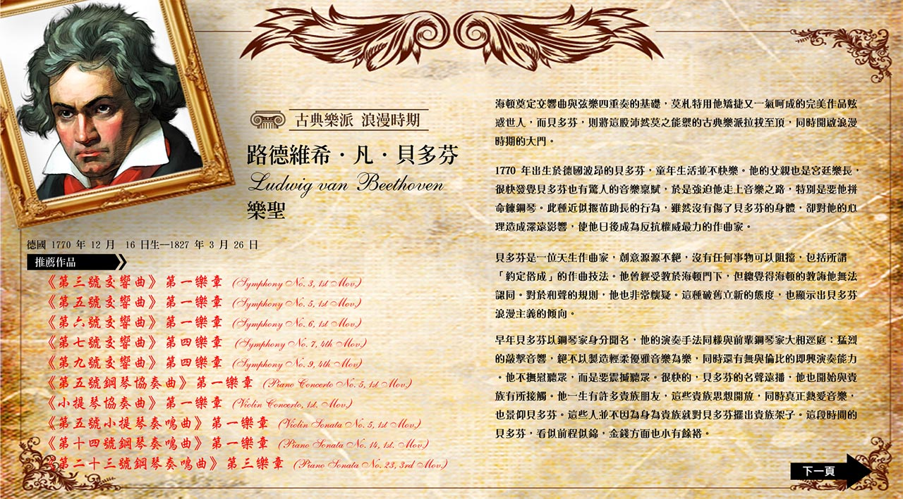
- 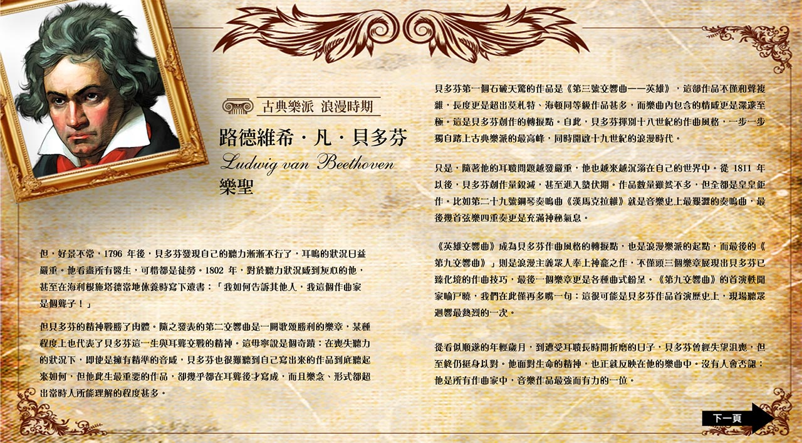
- 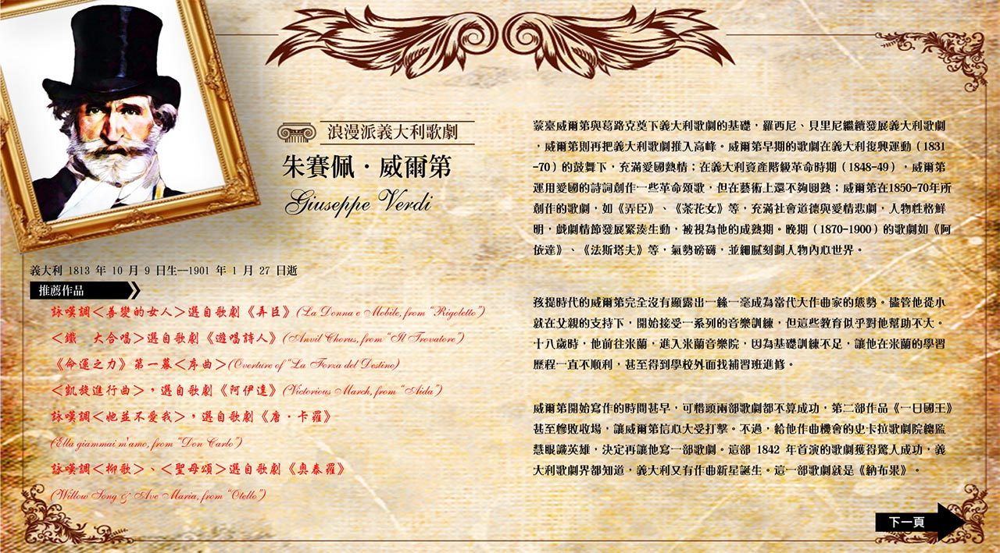
- 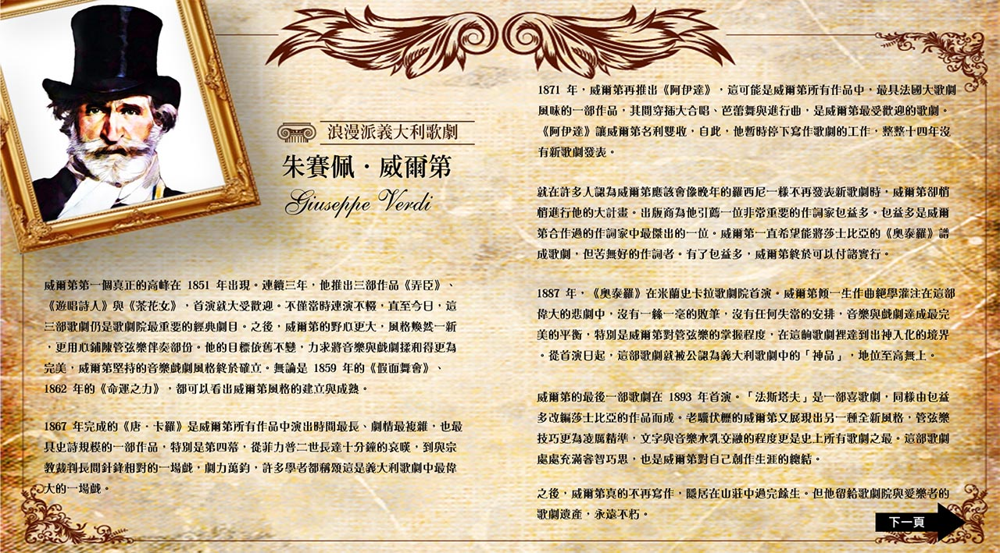
- 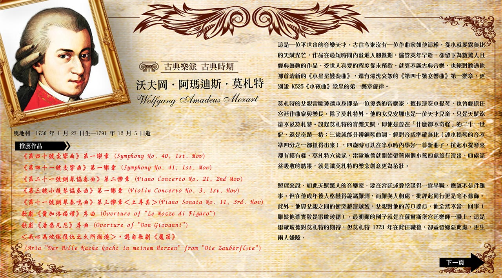
- 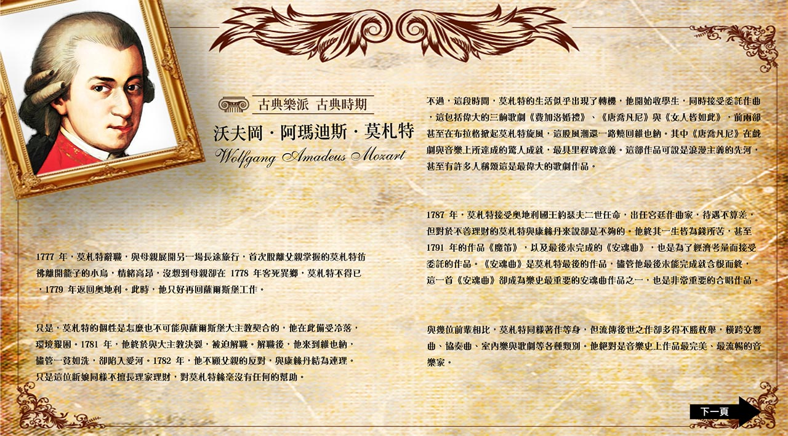
- 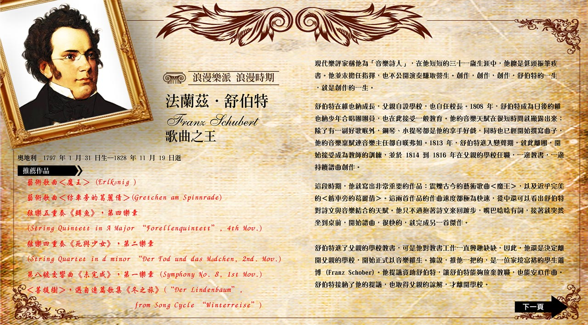
- 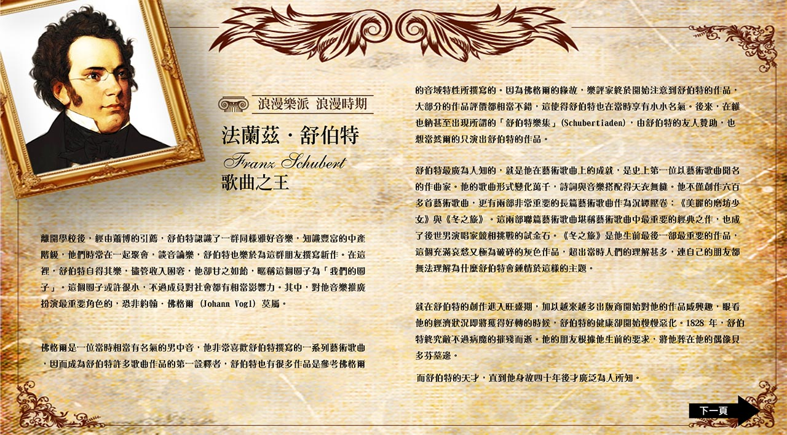
- 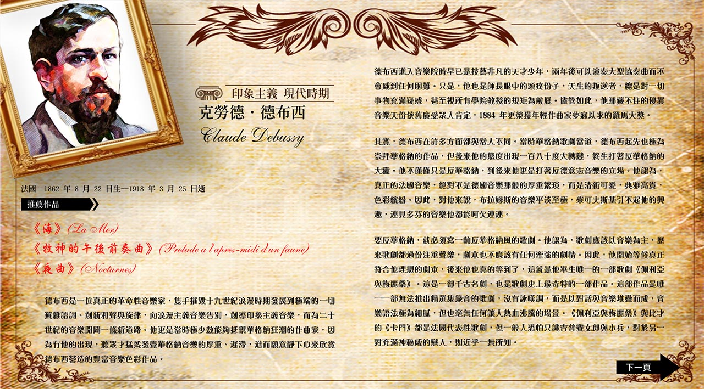
- 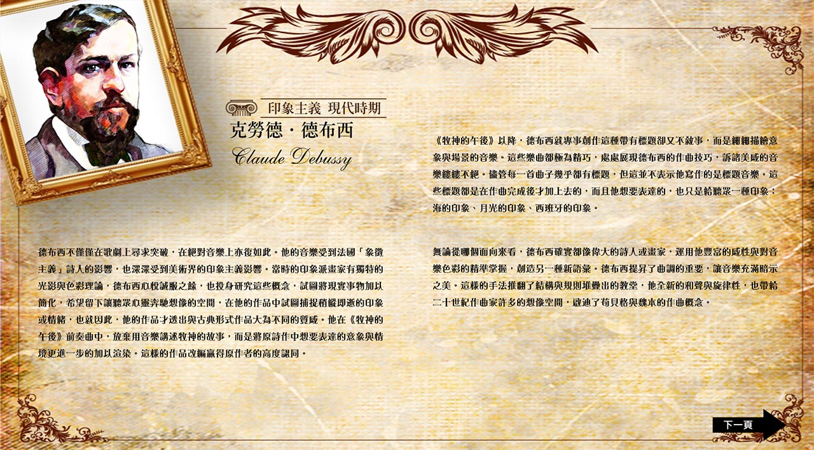
- 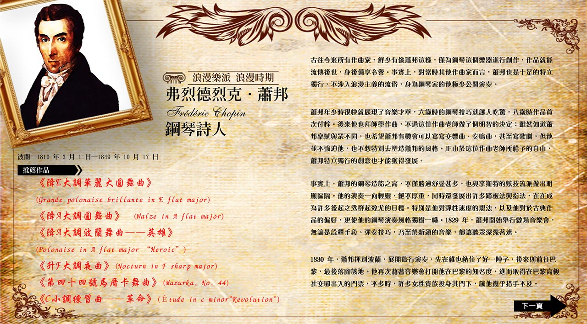
- 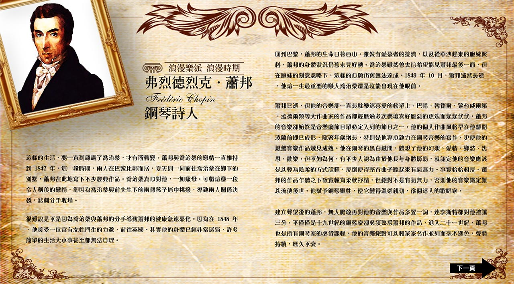

※下列樂器與「穿越日記」公事包站點之遊戲內容相關

長笛是現代已知的樂器家族中最古老的成員之一，屬於交響樂團中，木管樂器組裡的高音旋律樂器。它的外型為一根圓柱長管，長管中間有許多的音孔。現今大部分利用金屬製作，但仍然有廠商製作木製長笛。長笛可分為頭管、管身(本管)和管尾三部分。長笛是唯一沒有簧片的木管樂器，與有簧片樂器不同的是，長笛是由在管身一側之吹口上的氣簧發聲。它的發聲原理為：吹奏者下唇緊貼吹口吹氣，配合按鍵改變氣流在管身的長短，發出聲音。

單簧管是由單片簧片貼在吹嘴而得名，又稱豎笛、黑管。它通常由非洲黑檀木製成，外型為一根圓柱長管。單簧管的主要構造有：簧片，束圈、吹嘴、調節管、上管身、下管身、按鍵，以及揚音管。單簧管的發聲原理為：吹奏者含著固定在吹嘴上的竹片對著吹口吹氣，氣流通過簧片，簧片震動後帶動管內空氣共振，而發出聲音。

低音管，又稱巴松管，是雙簧樂器中的低音樂器，音色沈穩渾厚。低音管其簧片裝在一條彎曲的金屬管上，音管極長，全長約兩公尺半，因此樂器外觀是折起成「U」狀。低音管的構造可分為六部分：簧片、吹口管、側管、底管、本管和揚音管。低音管的發聲原理為：吹奏者將氣吹入，氣流通過簧片，簧片震動後帶動管內空氣共振，而發出聲音。

法國號，又稱圓號。最早是由獸角發展而來，英文稱之為HORN，為號角的意思。法國號是由金屬管捲曲而成，吹口管極細，一直放大到喇叭口，全長可達3.7公尺以上，是管樂團中長度最長的樂器。法國號構造有吹嘴、吹口管、轉閥、調音管，以及喇叭口。法國號的發聲原理為：吹奏者將氣吹入，透過雙唇振動，再利用左手控制轉閥使氣流通過不同的調音管，藉此改變音高，又以放在喇叭口內的右手，塞住或放開來微調音色與音高。

小號是銅管樂器中的高音樂器，是一件移調樂器，最常見的是降B調小號，其他還有C調、D調、降E調等等。小號的構造是將一根銅管彎曲而成，管口外擴成喇叭形狀，另一端接上杯形吹嘴，還有調音管和排水口，再於管身接上3個活塞按鍵，當按下活塞時，管內空氣通過的長度會改變，藉由三個活塞的排列組合，音高也就隨之改變。小號的音色相當高亢響亮，經常也象徵著勝利凱旋、英勇威武，在管樂團、交響樂團及軍樂隊中為重要的高音樂器。

豎琴是一件大型撥弦樂器，琴框呈現三角形，底部有臺座支撐，高度大約是175公分，因體積大且重而置於地面，演奏者以坐姿演奏。豎琴一共有47條弦，每弦一音，因為琴弦繁多，特別將C音弦製成藍色、F音弦製成紅色，讓演奏者能順利找到正確的音。最原始的豎琴無法轉調，而現代常用的豎琴設置了踏板，演奏者可用腳踩踏板改變調性。演奏豎琴時需雙手並用，以小指之外的其他手指進行彈撥，音響雖小，但音色輕巧靈活，可獨奏、重奏和合奏。

弦樂器
依音域高低有小提琴、中提琴、大提琴、低音提琴，它們的外型都很類似，只是尺寸大小不同，定弦音也不同。在樂團中也會使用到豎琴，它則屬於撥弦樂器。
木管樂器
由木質材料製成的管狀吹奏樂器，依發聲原理不同，可分為1.無簧類(長笛)、2.單簧類(單簧管)、3.雙簧類(雙簧管、低音管)。
銅管樂器
以金屬材質製成，利用發聲管的長短，控制泛音的變化來發出不同的音高，其音量大小的變化特別大。屬於銅管樂器的有法國號、小號、長號、低音號。
打擊樂器
只要能敲擊發聲的物體都可以成為打擊樂器家族的一員，在交響樂團中，往往用來加強節奏性，其聲響也能提供強烈的戲劇張力。基本上可以將其分為兩類:有固定音高的打擊樂器及無固定音高的打擊樂器。有固定音高的打擊樂器指其發出的音高是可辨識的，例如定音鼓，以及可演奏弦律的木琴、鐵琴等等。無固定音高的打擊樂器有大鼓、小鼓、拔、三角鐵、響板等。
樂團配置
以指揮台的位置為中心，第一小提琴、第二小提琴、中提琴、大提琴和低音提琴從左到右呈扇形依次排開；在弦樂器的後面是木管和銅管樂器，最後排則是打擊樂器。


認識五線譜
五線譜，又稱譜表，由五條平行橫線構成，共有五個線四個間，用來記載各種樂音的符號，擺得愈高代表愈高音，每將音符上移半格，就將音高提升了一級，反之亦然。
五線譜的「五線、四間」皆可擺放音符，共可以擺放 11 個不同音高的音符。
五線譜的「五線、四間」皆可擺放音符，共可以擺放 11 個不同音高的音符。
認識譜號
譜號是用來置於五線譜上，使音符有固定音級名稱之符號。常見的譜號有：
1.高音譜號：高音譜號指定第二線的音為Ｇ，故又稱G譜號，音符放於此線時，音高會是 G4 。高音譜號寫在譜表上，便成為高音譜表，通常使用在歌曲、小提琴、豎笛、長笛、鋼琴、小號等高音樂器的樂譜。
1.高音譜號：高音譜號指定第二線的音為Ｇ，故又稱G譜號，音符放於此線時，音高會是 G4 。高音譜號寫在譜表上，便成為高音譜表，通常使用在歌曲、小提琴、豎笛、長笛、鋼琴、小號等高音樂器的樂譜。

以 G4 音為中心，可在五線線譜上排列出不同音高的相應位置，下圖為高音譜號的五線譜，記錄 D4-G5 的音。

2.低音譜號：低音譜號指定第四線的音為Ｆ，故又稱F譜號，音符放於此線時，音高會是 F3。低音譜號寫在譜表上，便成為低音譜表。低音譜表是為記載低音部樂音而用的，通常使用在如男低音、低音大提琴、低音號、鋼琴、定音鼓等。

以 F3 音為中心，可在五線線譜上排列出不同音高的相應位置，下圖為低音譜號的五線譜，記錄F2-B3的音。

在高、低音譜號的五線譜中，唱名一樣的音，實際的音高與琴鍵位置，卻是相差一個八度。

認識和弦
「和弦」基本由三個音組成，音與音之間相差三度。
和弦可以分為三和弦(triads)、七和弦(sevenths)及九和弦(ninths)等等。三和弦是由三個音組成，七和弦是由四個音組成，九和弦則由五個音組成。
舉例：
和弦可以分為三和弦(triads)、七和弦(sevenths)及九和弦(ninths)等等。三和弦是由三個音組成，七和弦是由四個音組成，九和弦則由五個音組成。
舉例：